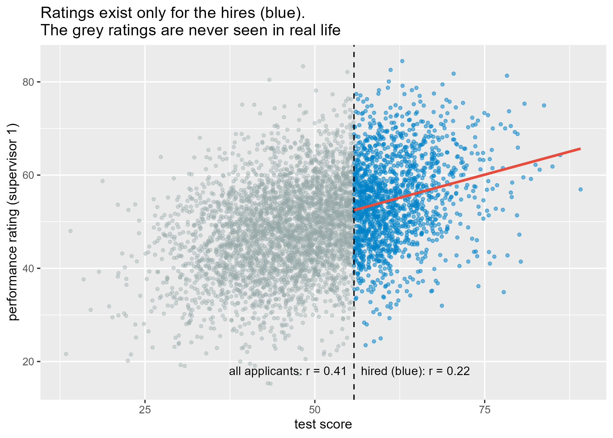
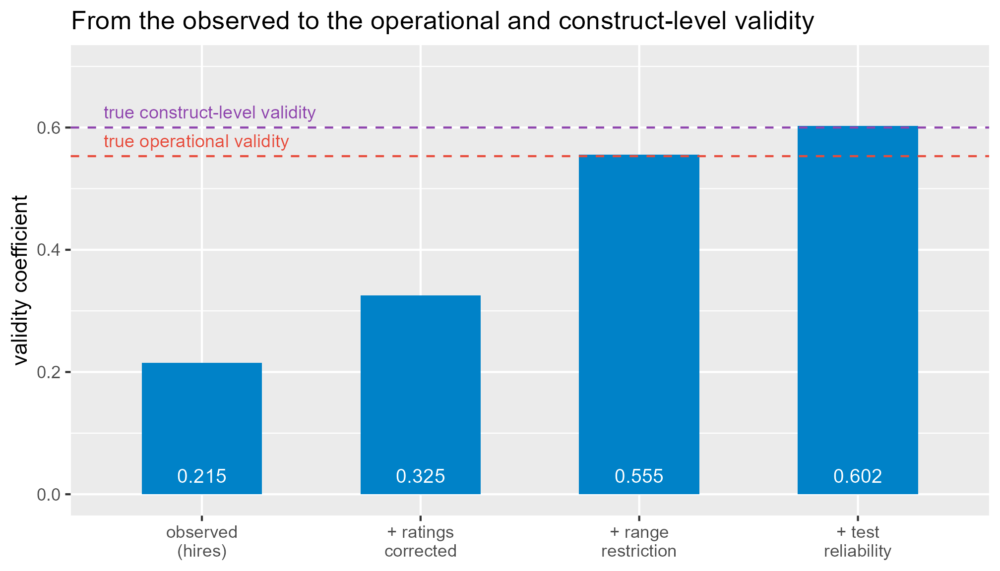
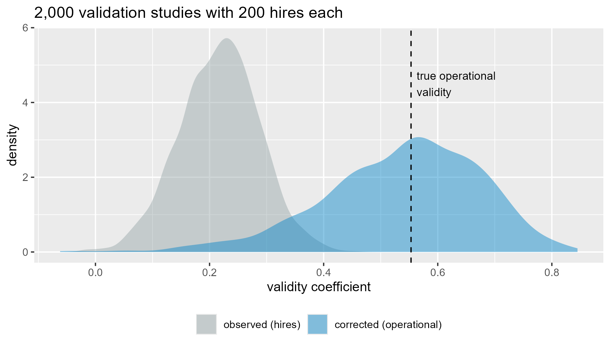
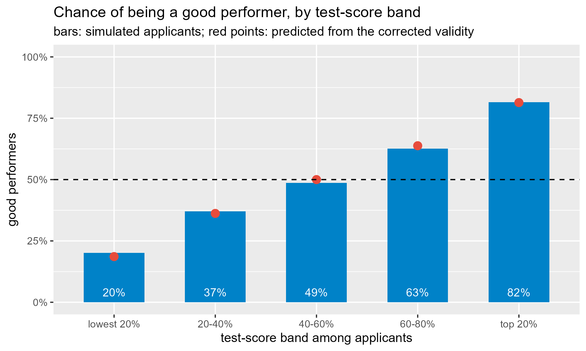
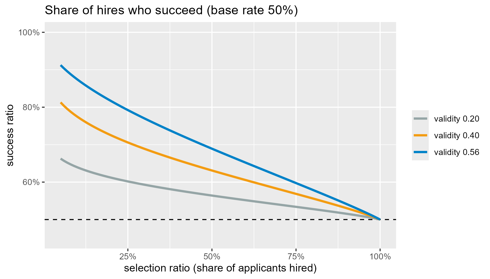
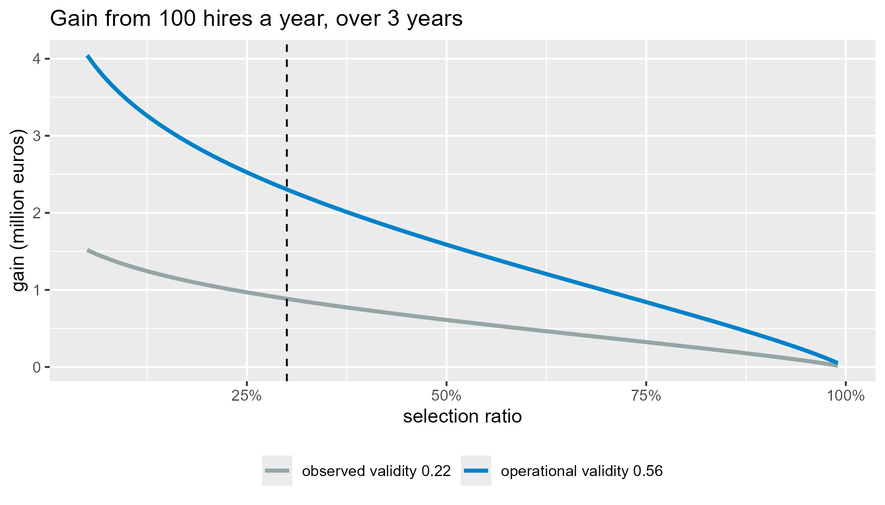
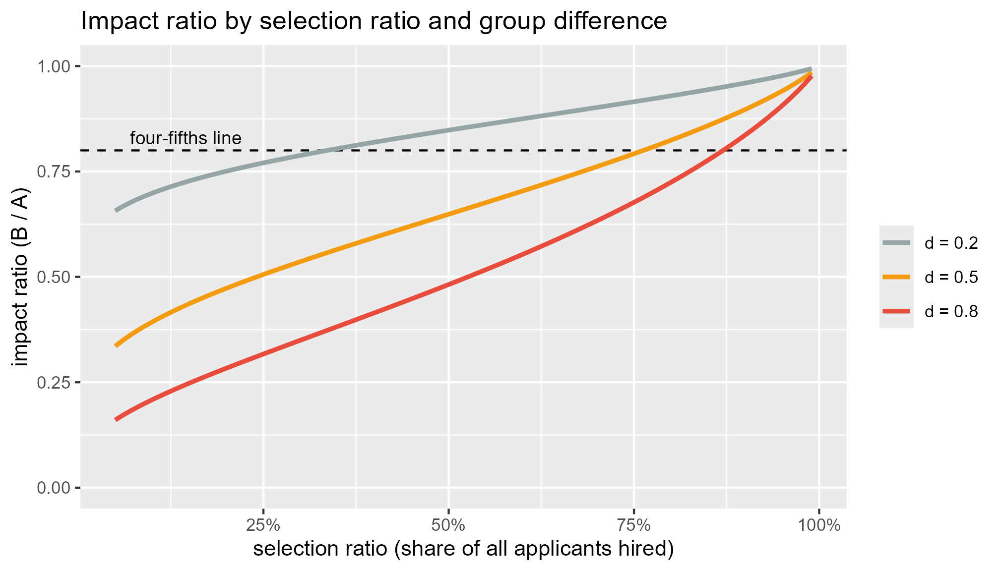

Code
library(ggplot2)
library(patchwork) # put plots side by side
library(mvtnorm) # pmvnorm(): areas of the bivariate normal distribution (section 6)An employer hires customer-service advisers. Every applicant takes a reasoning test, and only those above a cut score are hired. A year later each new adviser’s supervisor rates their job performance. The employer wants to know: how well does the test predict performance? That number, the correlation between test scores and performance, is the test’s validity coefficient.
The obvious answer is to correlate the test scores of the hires with their ratings. That correlation is almost always too low, for two reasons:
So we need to be clear about which validity we mean:
| Validity | Test | Performance | People | Used for |
|---|---|---|---|---|
| Observed | observed scores | one supervisor’s ratings | the hires | what the data give |
| Operational | observed scores | true performance | all applicants | decisions about using the test |
| Construct-level | true ability | true performance | all applicants | theory: how strongly the ability itself matters |
The operational validity is the one for practical decisions: the test is used as it is, with its measurement error, on applicants, to predict their real performance (Schmidt & Hunter, 1998). As in other pages of this site, we simulate the applicant pool, so we know every true value and can check each correction against it.
The true values, for the whole applicant pool:
From these the true operational validity is \(\rho \sqrt{r_{xx}} = 0.60 \times \sqrt{0.85} = 0.553\): measurement error in the test lowers the correlation by the square root of its reliability.
rho <- 0.60; rxx <- 0.85; ryy <- 0.52
truth <- c(construct = rho, operational = rho * sqrt(rxx))
simulate_pool <- function(n) {
ability <- rnorm(n) # true reasoning ability
performance <- rho * ability + sqrt(1 - rho^2) * rnorm(n) # true job performance
test_error <- rnorm(n, sd = sqrt(1 / rxx - 1)) # so that reliability = rxx
e1 <- rnorm(n, sd = sqrt(1 / ryy - 1)) # supervisor 1's personal view
e2 <- rnorm(n, sd = sqrt(1 / ryy - 1)) # supervisor 2's personal view
data.frame(ability, performance, test_error, e1,
test = 50 + 10 * sqrt(rxx) * (ability + test_error), # test score: mean 50, SD 10
rating1 = 50 + 10 * sqrt(ryy) * (performance + e1), # rating by supervisor 1
rating2 = 50 + 10 * sqrt(ryy) * (performance + e2)) # rating by supervisor 2
}
set.seed(65)
pool <- simulate_pool(5000) # five years of applicants
cut_score <- quantile(pool$test, 0.70) # the top 30% are hired
pool$hired <- pool$test >= cut_score
hires <- pool[pool$hired, ]
c(applicants = nrow(pool), hired = nrow(hires), cut_score = unname(round(cut_score, 1)))applicants hired cut_score
5000.0 1500.0 55.8 Every applicant has a test score, but in real life only the 1,500 hires get performance ratings. Each hire is rated by two supervisors (in practice, often only a subsample is), which tells us how reliable the ratings are. The ratings of the rejected applicants exist only because this is a simulation.
r_pool <- cor(pool$test, pool$rating1)
r_hires <- cor(hires$test, hires$rating1)
ggplot(pool, aes(test, rating1)) +
geom_point(data = subset(pool, !hired), colour = "#95A5A6", alpha = 0.35, size = 1) +
geom_point(data = hires, colour = "#0082c8", alpha = 0.5, size = 1) +
geom_vline(xintercept = cut_score, linetype = "dashed") +
geom_smooth(data = hires, method = "lm", formula = y ~ x, se = FALSE, colour = "#E74C3C") +
annotate("text", x = cut_score + 1, y = 18, hjust = 0, size = 3.5,
label = sprintf("hired (blue): r = %.2f", r_hires)) +
annotate("text", x = cut_score - 1, y = 18, hjust = 1, size = 3.5,
label = sprintf("all applicants: r = %.2f", r_pool)) +
labs(title = "Ratings exist only for the hires (blue).\nThe grey ratings are never seen in real life",
x = "test score", y = "performance rating (supervisor 1)")
group n sd_test r_test_rating
1 all applicants 5000 10.16 0.406
2 hires 1500 5.24 0.215Among all applicants the test correlates 0.41 with a supervisor’s rating; among the hires only 0.22. The test scores of the hires vary about half as much (SD 5.2 against 10.2). Over such a narrow range, the noise in the ratings swamps the trend. The test did not get worse; we are looking at the slice of applicants where it has least to do.
And the true operational validity is higher still: 0.553. The two corrections below recover it.
When two supervisors rate the same advisers, the correlation between their ratings is the interrater reliability of one supervisor’s rating:
It is 0.44 among the hires, lower than the 0.52 that holds for all applicants. The supervisors are no worse; the true performance of the hires varies less (it was partly selected through the test), so the same amount of rating noise is a larger share of the total.
Spearman’s (1904) formula removes the effect of measurement error in the criterion:
\[r_{c} = \frac{r_{xy}}{\sqrt{r_{yy}}}\]
We correct for the unreliability of the ratings only. The unreliability of the test stays in, because the test will always be used with its measurement error: that is what “operational” means. Correcting for it too would describe a perfect test that does not exist.
observed corrected_for_ratings
0.2151800 0.3254243 \[r_c = \frac{0.215}{\sqrt{0.437}} = 0.325\]
This is the validity among the hires, as if their performance had been measured without error. It is still range-restricted.
When people were selected directly on the test, the validity in the applicant pool follows from the validity among the hires and from how much the selection narrowed the test scores (Thorndike, 1949). Write \(u\) for the ratio of the test’s standard deviation among the hires (\(s\)) to that among all applicants (\(S\)), and \(U = 1/u\):
\[u = \frac{s}{S}, \qquad R = \frac{r\,U}{\sqrt{1 + r^2\,(U^2 - 1)}}\]
where \(r\) is the restricted correlation and \(R\) the corrected one. \(S\) is easy to get: every applicant took the test, so their scores are on file even if they were not hired.
u operational_validity truth
0.5153647 0.5553490 0.5531727 \[u = \frac{5.24}{10.16} = 0.515, \qquad R = \frac{0.325 \times 1.940}{\sqrt{1 + 0.325^2 (1.940^2 - 1)}} = 0.555\]
The estimate of the operational validity, 0.555, is close to the true 0.553. The observed 0.22 understated it by about 61%.
Case II assumes that the relationship is linear with the same spread at every test score, and that selection was made on the test itself. Both are true here; section “Indirect range restriction” shows what happens when the second is not.
Each correction must use a reliability from the same group as the correlation it corrects. Our rating reliability comes from the hires, so it goes with the hires’ correlation: correct for the ratings first, then for range restriction. The other way round would need the rating reliability among all applicants, which is never available, because the rejected applicants were never rated.
data.frame(
order = c("ratings first (hires' reliability), then range restriction",
"range restriction first, then ratings with the hires' reliability (wrong)",
"range restriction first, then ratings with the applicants' reliability"),
estimate = round(c(r_op,
case_ii(r_obs, u) / sqrt(ryy_hires),
case_ii(r_obs, u) / sqrt(cor(pool$rating1, pool$rating2))), 3)) order estimate
1 ratings first (hires' reliability), then range restriction 0.555
2 range restriction first, then ratings with the hires' reliability (wrong) 0.595
3 range restriction first, then ratings with the applicants' reliability 0.542The wrong mix over-corrects to 0.595. The third line gives practically the same answer as the first, but needs the applicants’ rating reliability, which we have only because this is a simulation.
For theory, how strongly reasoning ability itself relates to performance, also remove the measurement error of the test. Use the test’s reliability among applicants, because by now the correlation describes the applicants:
\[\rho = \frac{R}{\sqrt{r_{xx}}}\]
construct_level truth
0.6023606 0.6000000 In the simulation we know every applicant’s true scores and errors, so we can check this directly. The rwf package’s compute_dissatenuation() takes the true scores and errors of two variables, computes the observed correlation and both reliabilities, and corrects for both:
[1] 0.6089731It gives 0.609, close to both our estimate (0.602) and the truth (0.60); the small differences are sampling error. In real data the true scores are unknown, and the reliabilities come from a test manual, an internal-consistency estimate or a second rater, as above.
steps <- data.frame(
step = factor(c("observed\n(hires)", "+ ratings\ncorrected", "+ range\nrestriction", "+ test\nreliability"),
levels = c("observed\n(hires)", "+ ratings\ncorrected", "+ range\nrestriction", "+ test\nreliability")),
value = c(r_obs, r_crit, r_op, r_con))
ggplot(steps, aes(step, value)) +
geom_col(fill = "#0082c8", width = 0.55) +
geom_hline(yintercept = truth, linetype = "dashed", colour = c("#8E44AD", "#E74C3C")) +
annotate("text", x = 0.55, y = truth + 0.025, hjust = 0, size = 3.2, colour = c("#8E44AD", "#E74C3C"),
label = c("true construct-level validity", "true operational validity")) +
geom_text(aes(y = 0.03, label = sprintf("%.3f", value)), size = 3.5, colour = "white") +
scale_y_continuous(limits = c(0, 0.7)) +
labs(title = "From the observed to the operational and construct-level validity",
x = NULL, y = "validity coefficient")
Selection is rarely made on the test that is being validated. More often a new test is tried out on staff who were hired with something else: an interview, an older test, a mix of criteria. If that something correlates with the new test, the new test’s range is restricted indirectly. The test scores still look narrower among the staff, but Case II, which assumes direct selection on this test, then under-corrects (Hunter et al., 2006).
Hunter, Schmidt and Le’s correction (often called Case IV) assumes that the selection worked through the true ability that the test measures:
A second employer validates our test on advisers who were hired with an older test of the same ability (one that correlates 0.90 with true ability), again the top 30%:
set.seed(7)
pool2 <- simulate_pool(20000)
pool2$old_test <- 0.9 * pool2$ability + sqrt(1 - 0.9^2) * rnorm(20000) # what the hiring was based on
staff <- pool2[pool2$old_test >= quantile(pool2$old_test, 0.70), ]
r2 <- cor(staff$test, staff$rating1)
ry2 <- cor(staff$rating1, staff$rating2)
u2 <- sd(staff$test) / sd(pool2$test)
rxx_i <- 1 - (1 - rxx) / u2^2 # step 1
rho_i <- r2 / sqrt(rxx_i * ry2) # step 2
u_t <- sqrt((u2^2 - (1 - rxx)) / rxx) # step 3
case_iv <- case_ii(rho_i, u_t) * sqrt(rxx) # steps 4 and 5
round(c(observed = r2, ratings_corrected_only = r2 / sqrt(ry2), case_ii = case_ii(r2 / sqrt(ry2), u2),
case_iv = case_iv, truth = cor(pool2$test, pool2$performance)), 3) observed ratings_corrected_only case_ii case_iv truth
0.247 0.365 0.489 0.564 0.555 Case II moves the estimate in the right direction but stops at 0.49; Case IV reaches 0.56, close to the truth. When you cannot tell whether selection was direct or indirect, Case II is the cautious choice: if the selection was in fact indirect, it errs on the low side. Corrections are only as good as their inputs, though, and a recent re-analysis argues that many published validities were over-corrected because the range restriction values used were too large (Sackett et al., 2022). Use the actual applicant standard deviation of your own test whenever you have it.
A validation study of 1,500 hires is rare. With a more typical 200 hires, how much do the observed and corrected validities vary from study to study? We repeat the whole study 2,000 times: 667 applicants, the top 200 hired, two supervisors rating each:
set.seed(11)
one_study <- function() {
p <- simulate_pool(667)
h <- p[p$test >= quantile(p$test, 0.70), ]
r <- cor(h$test, h$rating1)
c(observed = r,
p_value = cor.test(h$test, h$rating1)$p.value,
operational = case_ii(r / sqrt(cor(h$rating1, h$rating2)), sd(h$test) / sd(p$test)))
}
studies <- as.data.frame(t(replicate(2000, one_study())))
round(data.frame(mean = sapply(studies[c("observed", "operational")], mean),
median = sapply(studies[c("observed", "operational")], median),
sd = sapply(studies[c("observed", "operational")], sd)), 3) mean median sd
observed 0.217 0.220 0.070
operational 0.538 0.552 0.138[1] 0.137long <- rbind(data.frame(validity = "observed (hires)", value = studies$observed),
data.frame(validity = "corrected (operational)", value = studies$operational))
long$validity <- factor(long$validity, levels = c("observed (hires)", "corrected (operational)"))
ggplot(long, aes(value, fill = validity)) +
geom_density(alpha = 0.45, colour = NA) +
geom_vline(xintercept = truth["operational"], linetype = "dashed") +
annotate("text", x = truth["operational"] + 0.01, y = 4.5, hjust = 0, size = 3.3, label = "true operational\nvalidity") +
scale_fill_manual(values = c("#95A5A6", "#0082c8")) +
labs(title = "2,000 validation studies with 200 hires each", x = "validity coefficient", y = "density", fill = NULL) +
theme(legend.position = "bottom")
A correlation of 0.55 sounds modest. Three classic tools translate it into things a manager understands.
Split the applicants into five equal bands by test score, and show the chance of being a good performer (here: true performance above the applicants’ median) in each band. With the estimated operational validity, the bivariate normal distribution predicts this chance for each band:
\[P(\text{good} \mid \text{band}) = \frac{P(x_{low} < X < x_{high},\; Y > y_c)}{P(x_{low} < X < x_{high})}\]
upper_tail <- function(a, b, r) { # P(X > a, Y > b) for a standard bivariate normal
if (a == -Inf) return(pnorm(b, lower.tail = FALSE)) # no lower limit on X
if (a == Inf) return(0) # nobody is above +infinity
as.numeric(pmvnorm(upper = c(-a, -b), corr = matrix(c(1, r, r, 1), 2), algorithm = TVPACK()))
}
edges <- qnorm(seq(0, 1, by = 0.2)) # five bands of 20% of applicants each
model <- sapply(1:5, function(k) (upper_tail(edges[k], 0, r_op) - upper_tail(edges[k + 1], 0, r_op)) / 0.2)
pool$band <- cut(pool$test, quantile(pool$test, seq(0, 1, by = 0.2)), include.lowest = TRUE,
labels = c("lowest 20%", "20-40%", "40-60%", "60-80%", "top 20%"))
pool$good <- pool$performance > median(pool$performance)
chart <- data.frame(band = levels(pool$band), simulated = as.numeric(tapply(pool$good, pool$band, mean)), model = model)
chart$band <- factor(chart$band, levels = chart$band)
round(chart[, -1], 3) simulated model
1 0.201 0.186
2 0.371 0.362
3 0.487 0.500
4 0.626 0.638
5 0.815 0.814ggplot(chart, aes(band, simulated)) +
geom_col(fill = "#0082c8", width = 0.6) +
geom_point(aes(y = model), colour = "#E74C3C", size = 3) +
geom_text(aes(y = 0.04, label = scales::percent(simulated, accuracy = 1)), size = 3.5, colour = "white") +
geom_hline(yintercept = 0.5, linetype = "dashed") +
scale_y_continuous(labels = scales::percent, limits = c(0, 1)) +
labs(title = "Chance of being a good performer, by test-score band",
subtitle = "bars: simulated applicants; red points: predicted from the corrected validity",
x = "test-score band among applicants", y = "good performers")
Applicants in the top fifth of test scores are good performers 82% of the time, those in the bottom fifth 20%. Without the test, it would be 50% everywhere.
Taylor and Russell (1939) asked: if we hire the top fraction of applicants (the selection ratio, SR) and a share of applicants would succeed anyway (the base rate), what share of those hired will succeed? With a cut \(x_c\) on the test and a success threshold \(y_c\) on performance, both on the standard normal scale:
\[\text{success ratio} = P(Y > y_c \mid X > x_c) = \frac{P(X > x_c,\; Y > y_c)}{\text{SR}}, \qquad x_c = \Phi^{-1}(1 - \text{SR}),\; y_c = \Phi^{-1}(1 - \text{base rate})\]
success_ratio <- function(r, sr, base_rate) upper_tail(qnorm(1 - sr), qnorm(1 - base_rate), r) / sr
validities <- c(0, 0.2, 0.4, round(r_op, 2))
sr_values <- c(0.1, 0.3, 0.5, 0.7, 0.9)
tr <- outer(validities, sr_values, Vectorize(function(r, sr) success_ratio(r, sr, base_rate = 0.5)))
dimnames(tr) <- list(validity = validities, selection_ratio = sr_values)
round(tr, 2) selection_ratio
validity 0.1 0.3 0.5 0.7 0.9
0 0.50 0.50 0.50 0.50 0.50
0.2 0.64 0.59 0.56 0.54 0.52
0.4 0.77 0.69 0.63 0.58 0.53
0.56 0.87 0.77 0.69 0.62 0.54Read a row as one test, a column as one hiring situation. With no validity (first row) the success ratio is the base rate, 50%, whatever the selection ratio. With our test (last row) and the employer’s selection ratio of 30%, 77% of hires succeed. A test pays off most when the selection ratio is low: when there are many applicants for each job.
grid_sr <- seq(0.05, 1, by = 0.01)
curves <- do.call(rbind, lapply(c(0.2, 0.4, round(r_op, 2)), function(r)
data.frame(sr = grid_sr, success = sapply(grid_sr, function(s) success_ratio(r, s, 0.5)),
validity = sprintf("validity %.2f", r))))
ggplot(curves, aes(sr, success, colour = validity)) +
geom_hline(yintercept = 0.5, linetype = "dashed") +
geom_line(linewidth = 1.1) +
scale_colour_manual(values = c("#95A5A6", "#f39c12", "#0082c8")) +
scale_x_continuous(labels = scales::percent) +
scale_y_continuous(labels = scales::percent, limits = c(0.45, 1)) +
labs(title = "Share of hires who succeed (base rate 50%)",
x = "selection ratio (share of applicants hired)", y = "success ratio", colour = NULL)
The Brogden-Cronbach-Gleser model (Brogden, 1949; Cronbach & Gleser, 1965) puts a money value on the gain from hiring with the test instead of at random:
\[\Delta U = N_s \cdot T \cdot r_{xy} \cdot SD_y \cdot \bar z_x \; - \; N \cdot C\]
utility <- function(r, sr, n_hired = 100, years = 3, sd_y = 12000, cost = 40) {
z_bar <- dnorm(qnorm(1 - sr)) / sr # average standard score of those hired
n_hired * years * r * sd_y * z_bar - (n_hired / sr) * cost
}
z_bar_30 <- dnorm(qnorm(0.7)) / 0.3
c(z_bar = z_bar_30, utility_corrected = utility(r_op, 0.3), utility_observed = utility(r_obs, 0.3)) z_bar utility_corrected utility_observed
1.158975e+00 2.303756e+06 8.844648e+05 With 100 hires a year who stay 3 years, an \(SD_y\) of €12,000 (40% of a €30,000 salary), €40 per test and a selection ratio of 30% (\(\bar z_x\) = 1.16), the test is worth about €2,304,000 for each year’s intake, or about €7,680 per hire per year. With the uncorrected validity the same test would look worth only €884,000, 62% less: using observed validities makes good tests look much less useful than they are.
u_curves <- do.call(rbind, lapply(c(r_obs, r_op), function(r)
data.frame(sr = grid_sr[grid_sr < 1], gain = sapply(grid_sr[grid_sr < 1], function(s) utility(r, s)) / 1e6,
validity = sprintf("%s validity %.2f", ifelse(r == r_op, "operational", "observed"), r))))
ggplot(u_curves, aes(sr, gain, colour = validity)) +
geom_line(linewidth = 1.1) +
geom_vline(xintercept = 0.3, linetype = "dashed") +
scale_colour_manual(values = c("#95A5A6", "#0082c8")) +
scale_x_continuous(labels = scales::percent) +
labs(title = "Gain from 100 hires a year, over 3 years",
x = "selection ratio", y = "gain (million euros)", colour = NULL) +
theme(legend.position = "bottom")
Treat these numbers as rough and optimistic. They ignore that some offers are refused, that money later is worth less than money now, and taxes and variable costs; \(SD_y\) is itself only an estimate (Cascio & Aguinis, 2019). Even after heavy discounts, a valid test used with a low selection ratio usually pays for itself many times over.
A test can be valid and still select members of one group at a lower rate than another. When groups differ on average on what the test measures, any cut score turns that difference into different selection rates. The common screen is the four-fifths rule from the United States’ Uniform Guidelines (1978): if a group’s selection rate is below 80% of the rate of the group selected most often, that is taken as evidence of adverse impact:
\[\text{impact ratio} = \frac{\text{selection rate of the group selected less often}}{\text{selection rate of the group selected most often}} < 0.80\]
Suppose 30% of the applicants belong to group B, whose mean on the test is half a standard deviation below group A’s (a difference of \(d = 0.5\)), and the employer keeps the cut that hires the top 30% overall:
set.seed(3)
n_a <- 3500; n_b <- 1500
applicants <- data.frame(group = rep(c("A", "B"), c(n_a, n_b)),
test = c(rnorm(n_a, 50, 10), rnorm(n_b, 45, 10))) # group B: 0.5 SD lower
cut_ab <- quantile(applicants$test, 0.70)
applicants$hired <- applicants$test >= cut_ab
rates <- aggregate(hired ~ group, applicants, function(h) c(applicants = length(h), hired = sum(h), rate = mean(h)))
rates <- data.frame(group = rates$group, rates$hired)
rates group applicants hired rate
1 A 3500 1214 0.3468571
2 B 1500 286 0.1906667[1] 0.549698[1] 3.394971e-28Group A is hired at 35%, group B at 19%: an impact ratio of 0.55, well below 0.80. The difference is also statistically significant; with small numbers of applicants, the four-fifths rule and a significance test can disagree, and both are usually reported.
How the impact depends on the cut score and the size of the group difference, computed from the normal distribution:
impact_curve <- function(d, sr, share_b = 0.3) {
overall <- function(cut) (1 - share_b) * (1 - pnorm(cut)) + share_b * (1 - pnorm(cut + d)) - sr
cut <- uniroot(overall, c(-6, 6))$root # the cut that hires sr of all applicants
(1 - pnorm(cut + d)) / (1 - pnorm(cut))
}
ic <- do.call(rbind, lapply(c(0.2, 0.5, 0.8), function(d)
data.frame(sr = grid_sr[grid_sr < 1], ratio = sapply(grid_sr[grid_sr < 1], function(s) impact_curve(d, s)),
difference = sprintf("d = %.1f", d))))
ggplot(ic, aes(sr, ratio, colour = difference)) +
geom_hline(yintercept = 0.8, linetype = "dashed") +
geom_line(linewidth = 1.1) +
annotate("text", x = 0.07, y = 0.83, hjust = 0, size = 3.3, label = "four-fifths line") +
scale_colour_manual(values = c("#95A5A6", "#f39c12", "#E74C3C")) +
scale_x_continuous(labels = scales::percent) +
scale_y_continuous(limits = c(0, 1)) +
labs(title = "Impact ratio by selection ratio and group difference",
x = "selection ratio (share of all applicants hired)", y = "impact ratio (B / A)", colour = NULL)
[1] 0.34 0.76Adverse impact is not the same as an unfair test. If the test predicts performance equally well in both groups (the same regression line), the selection rates reflect a real difference in what the test measures. Whether it does is a separate analysis: differential prediction (comparing the groups’ regression lines) and measurement invariance, as in the Measurement Invariance tutorial. Ways to reduce impact while keeping validity include combining the test with other valid predictors on which the groups differ less. The legal rules differ between countries; the four-fifths rule is a screen, not a verdict.
A validation report (APA 7th edition) should give the design and samples, the observed validity with its uncertainty, every correction with the values used and their sources, and the corrected validities. We collect the numbers from the R objects, and get the confidence interval of the corrected validity by correcting both limits of the observed interval:
n_h <- nrow(hires)
ci_obs <- tanh(atanh(r_obs) + c(-1, 1) * qnorm(0.975) / sqrt(n_h - 3)) # Fisher z interval
correct_op <- function(r) case_ii(r / sqrt(ryy_hires), u) # the same two corrections
ci_op <- correct_op(ci_obs)
ci_con <- ci_op / sqrt(rxx)
p_obs <- cor.test(hires$test, hires$rating1)$p.value
nz <- function(x, d = 2) sub("^(-?)0", "\\1", formatC(x, format = "f", digits = d)) # no leading zero
pval <- function(p) if (p < .001) "< .001" else paste("=", nz(p, 3))Method (data analysis):
All 5,000 applicants completed the reasoning test; the 1,500 with the highest scores (selection ratio = .30) were hired. After one year, each hire was rated by two supervisors. The criterion was the rating of the first supervisor; the correlation between the two supervisors’ ratings served as the reliability of a single rating (ryy = .44). Validity was corrected for criterion unreliability using this estimate and then for direct range restriction on the test (Thorndike’s Case II), with the ratio of the test’s standard deviation among hires to that among all applicants (u = .52). The resulting operational validity was further corrected for test unreliability (rxx = .85 among applicants) to estimate construct-level validity. Confidence limits were corrected in the same way. Analyses were conducted in R (Version 4.6.2; R Core Team, 2026).
Results:
Among hires, test scores correlated with supervisor ratings, r(1498) = .22, 95% CI [.17, .26], p < .001. Corrected for criterion unreliability and range restriction, the operational validity of the test was .56, 95% CI [.45, .64]. Further corrected for test unreliability, the construct-level correlation between reasoning ability and job performance was .60, 95% CI [.49, .70]. At a selection ratio of .30 and a base rate of .50, this operational validity implies that 77% of those hired would be successful, compared with 50% under random selection.
Table 1
Validity of the Reasoning Test Before and After Corrections
| Coefficient | r | 95% CI | Correction values |
|---|---|---|---|
| Observed (hires) | .22 | [.17, .26] | n = 1,500 |
| Corrected for criterion unreliability | .33 | [.25, .40] | ryy = .44 |
| Operational validity (+ range restriction) | .56 | [.45, .64] | u = .52 |
| Construct-level (+ test unreliability) | .60 | [.49, .70] | rxx = .85 |
Note. N = 5,000 applicants, of whom 1,500 were hired. ryy = interrater reliability of one supervisor’s rating among hires; u = SD of test scores among hires / SD among applicants; rxx = test reliability among applicants. Confidence limits were corrected in the same way as the coefficients.
Points to remember:
citation() and citation("mvtnorm") in R give the exact references.| Observed validity | Correlation of test and ratings among hires: too low, because of range restriction and unreliable ratings |
| Operational validity | Observed test, true performance, all applicants: the one for decisions |
| Criterion unreliability | \(r / \sqrt{r_{yy}}\), with the rating reliability from the same group as \(r\) (usually the hires) |
| Direct range restriction | Case II: \(R = rU / \sqrt{1 + r^2(U^2 - 1)}\), \(U = S/s\) |
| Order | Ratings first (with the hires’ reliability), then range restriction |
| Indirect range restriction | Selection on something else: Case II under-corrects; use the true-score correction (Case IV) |
| Construct-level validity | Also divide by \(\sqrt{r_{xx}}\) (applicants’ reliability); for theory, not for decisions |
| Uncertainty | Corrections multiply the sampling error; correct the confidence limits too |
| Practical value | Expectancy charts, Taylor-Russell success ratios, utility \(\Delta U = N_s T r SD_y \bar z_x - NC\) |
| Adverse impact | Impact ratio below 0.80 (four-fifths rule); worse at strict cut scores; not the same as test bias |
| R | cor(), the formulas above, mvtnorm::pmvnorm(); rwf::compute_dissatenuation() for checks with simulated true scores |
Brogden, H. E. (1949). When testing pays off. Personnel Psychology, 2(2), 171–183.
Cascio, W. F., & Aguinis, H. (2019). Applied psychology in talent management (8th ed.). Sage.
Cronbach, L. J., & Gleser, G. C. (1965). Psychological tests and personnel decisions (2nd ed.). University of Illinois Press.
Equal Employment Opportunity Commission, Civil Service Commission, Department of Labor, & Department of Justice. (1978). Uniform guidelines on employee selection procedures. Federal Register, 43(166), 38290–38315.
Hunter, J. E., Schmidt, F. L., & Le, H. (2006). Implications of direct and indirect range restriction for meta-analysis methods and findings. Journal of Applied Psychology, 91(3), 594–612.
Sackett, P. R., & Yang, H. (2000). Correction for range restriction: An expanded typology. Journal of Applied Psychology, 85(1), 112–118.
Sackett, P. R., Zhang, C., Berry, C. M., & Lievens, F. (2022). Revisiting meta-analytic estimates of validity in personnel selection: Addressing systematic overcorrection for restriction of range. Journal of Applied Psychology, 107(11), 2040–2068.
Schmidt, F. L., & Hunter, J. E. (1998). The validity and utility of selection methods in personnel psychology: Practical and theoretical implications of 85 years of research findings. Psychological Bulletin, 124(2), 262–274.
Spearman, C. (1904). The proof and measurement of association between two things. The American Journal of Psychology, 15(1), 72–101.
Taylor, H. C., & Russell, J. T. (1939). The relationship of validity coefficients to the practical effectiveness of tests in selection: Discussion and tables. Journal of Applied Psychology, 23(5), 565–578.
Thorndike, R. L. (1949). Personnel selection: Test and measurement techniques. Wiley.
Viswesvaran, C., Ones, D. S., & Schmidt, F. L. (1996). Comparative analysis of the reliability of job performance ratings. Journal of Applied Psychology, 81(5), 557–574.
compute_dissatenuation() on this page---
title: "Selection Test Validity: Range Restriction, Reliability, Utility"
description: "How valid is a selection test? Correcting validity for range restriction and unreliable ratings in R, then expectancy charts, utility and adverse impact."
author: ""
---
```{r options, echo=FALSE, warning=FALSE, message=FALSE}
directory<-if (rstudioapi::isAvailable()) paste0(dirname(rstudioapi::getActiveDocumentContext()$path),"/") else ""
source(paste0(directory, "R/code_options.R"))
source(paste0(directory, "R/code_rwf.R"))
# wider, shorter figures than the site default; no knitr cache: the page runs in seconds
knitr::opts_chunk$set(fig.height = 4.5, cache = FALSE)
```
## The problem: we only see the people we hired
An employer hires customer-service advisers. Every applicant takes a reasoning test, and only those above a cut score are hired. A year later each new adviser's supervisor rates their job performance. The employer wants to know: **how well does the test predict performance?** That number, the correlation between test scores and performance, is the test's **validity coefficient**.
The obvious answer is to correlate the test scores of the hires with their ratings. That correlation is almost always **too low**, for two reasons:
1. **Range restriction.** Performance ratings exist only for the people who were hired, and they all scored above the cut. Among them the test scores vary much less than among all applicants, and a correlation computed on a narrow range of scores is smaller. But the test is used to choose among **applicants**, so the validity that matters is the one among applicants.
2. **An unreliable criterion.** Supervisors disagree. Part of each rating is the supervisor's personal view, not the adviser's performance, and that noise lowers the correlation with anything.
So we need to be clear about which validity we mean:
| Validity | Test | Performance | People | Used for |
|---|---|---|---|---|
| **Observed** | observed scores | one supervisor's ratings | the hires | what the data give |
| **Operational** | observed scores | true performance | all applicants | decisions about using the test |
| **Construct-level** | true ability | true performance | all applicants | theory: how strongly the ability itself matters |
The **operational validity** is the one for practical decisions: the test is used as it is, with its measurement error, on applicants, to predict their real performance (Schmidt & Hunter, 1998). As in other pages of this site, we **simulate** the applicant pool, so we know every true value and can check each correction against it.
```{r packages}
library(ggplot2)
library(patchwork) # put plots side by side
library(mvtnorm) # pmvnorm(): areas of the bivariate normal distribution (section 6)
```
---
## 1. Simulate the applicant pool
The true values, for the whole applicant pool:
- **Construct-level validity** $\rho = 0.60$: the correlation between true reasoning ability and true job performance.
- **Test reliability** $r_{xx} = 0.85$: 85% of the variance of the test scores is true ability, 15% measurement error.
- **Rating reliability** $r_{yy} = 0.52$: the reliability of a single supervisor's rating, the typical value found for supervisory ratings of job performance (Viswesvaran et al., 1996).
- **Selection ratio** 30%: the top 30% of applicants on the test are hired.
From these the true operational validity is $\rho \sqrt{r_{xx}} = 0.60 \times \sqrt{0.85} = `r sprintf("%.3f", 0.60 * sqrt(0.85))`$: measurement error in the test lowers the correlation by the square root of its reliability.
```{r simulate}
rho <- 0.60; rxx <- 0.85; ryy <- 0.52
truth <- c(construct = rho, operational = rho * sqrt(rxx))
simulate_pool <- function(n) {
ability <- rnorm(n) # true reasoning ability
performance <- rho * ability + sqrt(1 - rho^2) * rnorm(n) # true job performance
test_error <- rnorm(n, sd = sqrt(1 / rxx - 1)) # so that reliability = rxx
e1 <- rnorm(n, sd = sqrt(1 / ryy - 1)) # supervisor 1's personal view
e2 <- rnorm(n, sd = sqrt(1 / ryy - 1)) # supervisor 2's personal view
data.frame(ability, performance, test_error, e1,
test = 50 + 10 * sqrt(rxx) * (ability + test_error), # test score: mean 50, SD 10
rating1 = 50 + 10 * sqrt(ryy) * (performance + e1), # rating by supervisor 1
rating2 = 50 + 10 * sqrt(ryy) * (performance + e2)) # rating by supervisor 2
}
set.seed(65)
pool <- simulate_pool(5000) # five years of applicants
cut_score <- quantile(pool$test, 0.70) # the top 30% are hired
pool$hired <- pool$test >= cut_score
hires <- pool[pool$hired, ]
c(applicants = nrow(pool), hired = nrow(hires), cut_score = unname(round(cut_score, 1)))
```
Every applicant has a test score, but in real life only the `r format(nrow(hires), big.mark = ",")` hires get performance ratings. Each hire is rated by two supervisors (in practice, often only a subsample is), which tells us how reliable the ratings are. The ratings of the rejected applicants exist only because this is a simulation.
---
## 2. What the employer sees
```{r look, fig.height = 5}
r_pool <- cor(pool$test, pool$rating1)
r_hires <- cor(hires$test, hires$rating1)
ggplot(pool, aes(test, rating1)) +
geom_point(data = subset(pool, !hired), colour = "#95A5A6", alpha = 0.35, size = 1) +
geom_point(data = hires, colour = "#0082c8", alpha = 0.5, size = 1) +
geom_vline(xintercept = cut_score, linetype = "dashed") +
geom_smooth(data = hires, method = "lm", formula = y ~ x, se = FALSE, colour = "#E74C3C") +
annotate("text", x = cut_score + 1, y = 18, hjust = 0, size = 3.5,
label = sprintf("hired (blue): r = %.2f", r_hires)) +
annotate("text", x = cut_score - 1, y = 18, hjust = 1, size = 3.5,
label = sprintf("all applicants: r = %.2f", r_pool)) +
labs(title = "Ratings exist only for the hires (blue).\nThe grey ratings are never seen in real life",
x = "test score", y = "performance rating (supervisor 1)")
```
```{r restricted_numbers}
data.frame(group = c("all applicants", "hires"),
n = c(nrow(pool), nrow(hires)),
sd_test = round(c(sd(pool$test), sd(hires$test)), 2),
r_test_rating = round(c(r_pool, r_hires), 3))
```
Among all applicants the test correlates `r sprintf("%.2f", r_pool)` with a supervisor's rating; among the hires only `r sprintf("%.2f", r_hires)`. The test scores of the hires vary about half as much (SD `r sprintf("%.1f", sd(hires$test))` against `r sprintf("%.1f", sd(pool$test))`). Over such a narrow range, the noise in the ratings swamps the trend. The test did not get worse; we are looking at the slice of applicants where it has least to do.
And the true operational validity is higher still: `r sprintf("%.3f", truth["operational"])`. The two corrections below recover it.
---
## 3. Correction 1: the unreliable ratings
### How reliable are the ratings?
When two supervisors rate the same advisers, the correlation between their ratings is the **interrater reliability** of one supervisor's rating:
```{r interrater}
ryy_hires <- cor(hires$rating1, hires$rating2)
ryy_hires
```
It is `r sprintf("%.2f", ryy_hires)` among the hires, lower than the `r ryy` that holds for all applicants. The supervisors are no worse; the true performance of the hires varies less (it was partly selected through the test), so the same amount of rating noise is a larger share of the total.
### The correction for attenuation
Spearman's (1904) formula removes the effect of measurement error in the criterion:
$$r_{c} = \frac{r_{xy}}{\sqrt{r_{yy}}}$$
We correct for the unreliability of the **ratings only**. The unreliability of the **test** stays in, because the test will always be used with its measurement error: that is what "operational" means. Correcting for it too would describe a perfect test that does not exist.
```{r correct_criterion}
r_obs <- r_hires
r_crit <- r_obs / sqrt(ryy_hires)
c(observed = r_obs, corrected_for_ratings = r_crit)
```
$$r_c = \frac{`r sprintf("%.3f", r_obs)`}{\sqrt{`r sprintf("%.3f", ryy_hires)`}} = `r sprintf("%.3f", r_crit)`$$
This is the validity **among the hires**, as if their performance had been measured without error. It is still range-restricted.
---
## 4. Correction 2: range restriction
### Thorndike's Case II
When people were selected **directly on the test**, the validity in the applicant pool follows from the validity among the hires and from how much the selection narrowed the test scores (Thorndike, 1949). Write $u$ for the ratio of the test's standard deviation among the hires ($s$) to that among all applicants ($S$), and $U = 1/u$:
$$u = \frac{s}{S}, \qquad R = \frac{r\,U}{\sqrt{1 + r^2\,(U^2 - 1)}}$$
where $r$ is the restricted correlation and $R$ the corrected one. $S$ is easy to get: every applicant took the test, so their scores are on file even if they were not hired.
```{r case_ii}
case_ii <- function(r, u) { # Thorndike's Case II: direct selection on the test
U <- 1 / u
r * U / sqrt(1 + r^2 * (U^2 - 1))
}
u <- sd(hires$test) / sd(pool$test)
r_op <- case_ii(r_crit, u)
c(u = u, operational_validity = r_op, truth = unname(truth["operational"]))
```
$$u = \frac{`r sprintf("%.2f", sd(hires$test))`}{`r sprintf("%.2f", sd(pool$test))`} = `r sprintf("%.3f", u)`, \qquad R = \frac{`r sprintf("%.3f", r_crit)` \times `r sprintf("%.3f", 1 / u)`}{\sqrt{1 + `r sprintf("%.3f", r_crit)`^2 (`r sprintf("%.3f", 1 / u)`^2 - 1)}} = `r sprintf("%.3f", r_op)`$$
The estimate of the operational validity, **`r sprintf("%.3f", r_op)`**, is close to the true `r sprintf("%.3f", truth["operational"])`. The observed `r sprintf("%.2f", r_obs)` understated it by about `r round(100 * (1 - r_obs / r_op))`%.
Case II assumes that the relationship is linear with the same spread at every test score, and that selection was made on the test itself. Both are true here; section "Indirect range restriction" shows what happens when the second is not.
### The order of the corrections
Each correction must use a reliability from the **same group** as the correlation it corrects. Our rating reliability comes from the hires, so it goes with the hires' correlation: correct for the ratings **first**, then for range restriction. The other way round would need the rating reliability among **all** applicants, which is never available, because the rejected applicants were never rated.
```{r order}
data.frame(
order = c("ratings first (hires' reliability), then range restriction",
"range restriction first, then ratings with the hires' reliability (wrong)",
"range restriction first, then ratings with the applicants' reliability"),
estimate = round(c(r_op,
case_ii(r_obs, u) / sqrt(ryy_hires),
case_ii(r_obs, u) / sqrt(cor(pool$rating1, pool$rating2))), 3))
```
The wrong mix over-corrects to `r sprintf("%.3f", case_ii(r_obs, u) / sqrt(ryy_hires))`. The third line gives practically the same answer as the first, but needs the applicants' rating reliability, which we have only because this is a simulation.
### Construct-level validity
For theory, how strongly reasoning **ability itself** relates to performance, also remove the measurement error of the test. Use the test's reliability **among applicants**, because by now the correlation describes the applicants:
$$\rho = \frac{R}{\sqrt{r_{xx}}}$$
```{r construct}
r_con <- r_op / sqrt(rxx)
c(construct_level = r_con, truth = unname(truth["construct"]))
```
In the simulation we know every applicant's true scores and errors, so we can check this directly. The rwf package's `compute_dissatenuation()` takes the true scores and errors of two variables, computes the observed correlation and both reliabilities, and corrects for both:
```{r rwf_check}
rwf_construct <- compute_dissatenuation(variable1 = pool$ability, error1 = pool$test_error,
variable2 = pool$performance, error2 = pool$e1)
rwf_construct
```
It gives `r sprintf("%.3f", rwf_construct)`, close to both our estimate (`r sprintf("%.3f", r_con)`) and the truth (`r sprintf("%.2f", rho)`); the small differences are sampling error. In real data the true scores are unknown, and the reliabilities come from a test manual, an internal-consistency estimate or a second rater, as above.
### All the steps at once
```{r steps_plot, fig.height = 4}
steps <- data.frame(
step = factor(c("observed\n(hires)", "+ ratings\ncorrected", "+ range\nrestriction", "+ test\nreliability"),
levels = c("observed\n(hires)", "+ ratings\ncorrected", "+ range\nrestriction", "+ test\nreliability")),
value = c(r_obs, r_crit, r_op, r_con))
ggplot(steps, aes(step, value)) +
geom_col(fill = "#0082c8", width = 0.55) +
geom_hline(yintercept = truth, linetype = "dashed", colour = c("#8E44AD", "#E74C3C")) +
annotate("text", x = 0.55, y = truth + 0.025, hjust = 0, size = 3.2, colour = c("#8E44AD", "#E74C3C"),
label = c("true construct-level validity", "true operational validity")) +
geom_text(aes(y = 0.03, label = sprintf("%.3f", value)), size = 3.5, colour = "white") +
scale_y_continuous(limits = c(0, 0.7)) +
labs(title = "From the observed to the operational and construct-level validity",
x = NULL, y = "validity coefficient")
```
### Indirect range restriction
Selection is rarely made on the test that is being validated. More often a **new** test is tried out on staff who were hired with something else: an interview, an older test, a mix of criteria. If that something correlates with the new test, the new test's range is restricted **indirectly**. The test scores still look narrower among the staff, but Case II, which assumes direct selection on this test, then under-corrects (Hunter et al., 2006).
Hunter, Schmidt and Le's correction (often called Case IV) assumes that the selection worked through the **true** ability that the test measures:
1. Turn the applicant reliability of the test into its reliability among the hires: $r_{xx,i} = 1 - (1 - r_{xx,a}) / u_X^2$.
2. Correct the hires' correlation for **both** unreliabilities, with the hires' reliabilities: $\rho_i = r / \sqrt{r_{xx,i}\,r_{yy,i}}$.
3. Get the range restriction on true scores: $u_T = \sqrt{\dfrac{u_X^2 - (1 - r_{xx,a})}{r_{xx,a}}}$.
4. Apply the Case II formula with $u_T$; this gives the construct-level validity among applicants.
5. Multiply by $\sqrt{r_{xx,a}}$ to get the operational validity.
A second employer validates our test on advisers who were hired with an **older test** of the same ability (one that correlates 0.90 with true ability), again the top 30%:
```{r indirect}
set.seed(7)
pool2 <- simulate_pool(20000)
pool2$old_test <- 0.9 * pool2$ability + sqrt(1 - 0.9^2) * rnorm(20000) # what the hiring was based on
staff <- pool2[pool2$old_test >= quantile(pool2$old_test, 0.70), ]
r2 <- cor(staff$test, staff$rating1)
ry2 <- cor(staff$rating1, staff$rating2)
u2 <- sd(staff$test) / sd(pool2$test)
rxx_i <- 1 - (1 - rxx) / u2^2 # step 1
rho_i <- r2 / sqrt(rxx_i * ry2) # step 2
u_t <- sqrt((u2^2 - (1 - rxx)) / rxx) # step 3
case_iv <- case_ii(rho_i, u_t) * sqrt(rxx) # steps 4 and 5
round(c(observed = r2, ratings_corrected_only = r2 / sqrt(ry2), case_ii = case_ii(r2 / sqrt(ry2), u2),
case_iv = case_iv, truth = cor(pool2$test, pool2$performance)), 3)
```
Case II moves the estimate in the right direction but stops at `r sprintf("%.2f", case_ii(r2 / sqrt(ry2), u2))`; Case IV reaches `r sprintf("%.2f", case_iv)`, close to the truth. When you cannot tell whether selection was direct or indirect, Case II is the cautious choice: if the selection was in fact indirect, it errs on the low side. Corrections are only as good as their inputs, though, and a recent re-analysis argues that many published validities were **over**-corrected because the range restriction values used were too large (Sackett et al., 2022). Use the actual applicant standard deviation of your own test whenever you have it.
---
## 5. Corrected coefficients are noisier
A validation study of 1,500 hires is rare. With a more typical 200 hires, how much do the observed and corrected validities vary from study to study? We repeat the whole study 2,000 times: 667 applicants, the top 200 hired, two supervisors rating each:
```{r sampling}
set.seed(11)
one_study <- function() {
p <- simulate_pool(667)
h <- p[p$test >= quantile(p$test, 0.70), ]
r <- cor(h$test, h$rating1)
c(observed = r,
p_value = cor.test(h$test, h$rating1)$p.value,
operational = case_ii(r / sqrt(cor(h$rating1, h$rating2)), sd(h$test) / sd(p$test)))
}
studies <- as.data.frame(t(replicate(2000, one_study())))
round(data.frame(mean = sapply(studies[c("observed", "operational")], mean),
median = sapply(studies[c("observed", "operational")], median),
sd = sapply(studies[c("observed", "operational")], sd)), 3)
mean(studies$p_value > 0.05) # share of studies that find no significant validity
```
```{r sampling_plot, fig.height = 4}
long <- rbind(data.frame(validity = "observed (hires)", value = studies$observed),
data.frame(validity = "corrected (operational)", value = studies$operational))
long$validity <- factor(long$validity, levels = c("observed (hires)", "corrected (operational)"))
ggplot(long, aes(value, fill = validity)) +
geom_density(alpha = 0.45, colour = NA) +
geom_vline(xintercept = truth["operational"], linetype = "dashed") +
annotate("text", x = truth["operational"] + 0.01, y = 4.5, hjust = 0, size = 3.3, label = "true operational\nvalidity") +
scale_fill_manual(values = c("#95A5A6", "#0082c8")) +
labs(title = "2,000 validation studies with 200 hires each", x = "validity coefficient", y = "density", fill = NULL) +
theme(legend.position = "bottom")
```
- The corrected values are centred close to the truth (median `r sprintf("%.3f", median(studies$operational))`), but they spread **twice as widely** (SD `r sprintf("%.3f", sd(studies$operational))` against `r sprintf("%.3f", sd(studies$observed))`). A correction removes bias, not uncertainty: it multiplies the sampling error along with the coefficient.
- `r sprintf("%.0f", 100 * mean(studies$p_value > 0.05))`% of these studies would have found **no significant validity** at .05, for a test whose operational validity is `r sprintf("%.2f", truth["operational"])`. A small validation study that "finds nothing" is weak evidence that the test does not work.
- To give a confidence interval for a corrected validity, compute the interval of the observed correlation and pass both limits through the same corrections (section 8).
---
## 6. What validity is worth in practice
A correlation of 0.55 sounds modest. Three classic tools translate it into things a manager understands.
### Expectancy chart
Split the applicants into five equal bands by test score, and show the chance of being a **good performer** (here: true performance above the applicants' median) in each band. With the estimated operational validity, the bivariate normal distribution predicts this chance for each band:
$$P(\text{good} \mid \text{band}) = \frac{P(x_{low} < X < x_{high},\; Y > y_c)}{P(x_{low} < X < x_{high})}$$
```{r expectancy, fig.height = 4.2}
upper_tail <- function(a, b, r) { # P(X > a, Y > b) for a standard bivariate normal
if (a == -Inf) return(pnorm(b, lower.tail = FALSE)) # no lower limit on X
if (a == Inf) return(0) # nobody is above +infinity
as.numeric(pmvnorm(upper = c(-a, -b), corr = matrix(c(1, r, r, 1), 2), algorithm = TVPACK()))
}
edges <- qnorm(seq(0, 1, by = 0.2)) # five bands of 20% of applicants each
model <- sapply(1:5, function(k) (upper_tail(edges[k], 0, r_op) - upper_tail(edges[k + 1], 0, r_op)) / 0.2)
pool$band <- cut(pool$test, quantile(pool$test, seq(0, 1, by = 0.2)), include.lowest = TRUE,
labels = c("lowest 20%", "20-40%", "40-60%", "60-80%", "top 20%"))
pool$good <- pool$performance > median(pool$performance)
chart <- data.frame(band = levels(pool$band), simulated = as.numeric(tapply(pool$good, pool$band, mean)), model = model)
chart$band <- factor(chart$band, levels = chart$band)
round(chart[, -1], 3)
ggplot(chart, aes(band, simulated)) +
geom_col(fill = "#0082c8", width = 0.6) +
geom_point(aes(y = model), colour = "#E74C3C", size = 3) +
geom_text(aes(y = 0.04, label = scales::percent(simulated, accuracy = 1)), size = 3.5, colour = "white") +
geom_hline(yintercept = 0.5, linetype = "dashed") +
scale_y_continuous(labels = scales::percent, limits = c(0, 1)) +
labs(title = "Chance of being a good performer, by test-score band",
subtitle = "bars: simulated applicants; red points: predicted from the corrected validity",
x = "test-score band among applicants", y = "good performers")
```
Applicants in the top fifth of test scores are good performers `r sprintf("%.0f", 100 * chart$simulated[5])`% of the time, those in the bottom fifth `r sprintf("%.0f", 100 * chart$simulated[1])`%. Without the test, it would be 50% everywhere.
### Taylor-Russell: the success ratio
Taylor and Russell (1939) asked: if we hire the top fraction of applicants (the **selection ratio**, SR) and a share of applicants would succeed anyway (the **base rate**), what share of those hired will succeed? With a cut $x_c$ on the test and a success threshold $y_c$ on performance, both on the standard normal scale:
$$\text{success ratio} = P(Y > y_c \mid X > x_c) = \frac{P(X > x_c,\; Y > y_c)}{\text{SR}}, \qquad x_c = \Phi^{-1}(1 - \text{SR}),\; y_c = \Phi^{-1}(1 - \text{base rate})$$
```{r taylor_russell}
success_ratio <- function(r, sr, base_rate) upper_tail(qnorm(1 - sr), qnorm(1 - base_rate), r) / sr
validities <- c(0, 0.2, 0.4, round(r_op, 2))
sr_values <- c(0.1, 0.3, 0.5, 0.7, 0.9)
tr <- outer(validities, sr_values, Vectorize(function(r, sr) success_ratio(r, sr, base_rate = 0.5)))
dimnames(tr) <- list(validity = validities, selection_ratio = sr_values)
round(tr, 2)
```
Read a row as one test, a column as one hiring situation. With no validity (first row) the success ratio is the base rate, 50%, whatever the selection ratio. With our test (last row) and the employer's selection ratio of 30%, `r sprintf("%.0f", 100 * success_ratio(r_op, 0.3, 0.5))`% of hires succeed. A test pays off most when the selection ratio is low: when there are many applicants for each job.
```{r taylor_russell_plot, fig.height = 4}
grid_sr <- seq(0.05, 1, by = 0.01)
curves <- do.call(rbind, lapply(c(0.2, 0.4, round(r_op, 2)), function(r)
data.frame(sr = grid_sr, success = sapply(grid_sr, function(s) success_ratio(r, s, 0.5)),
validity = sprintf("validity %.2f", r))))
ggplot(curves, aes(sr, success, colour = validity)) +
geom_hline(yintercept = 0.5, linetype = "dashed") +
geom_line(linewidth = 1.1) +
scale_colour_manual(values = c("#95A5A6", "#f39c12", "#0082c8")) +
scale_x_continuous(labels = scales::percent) +
scale_y_continuous(labels = scales::percent, limits = c(0.45, 1)) +
labs(title = "Share of hires who succeed (base rate 50%)",
x = "selection ratio (share of applicants hired)", y = "success ratio", colour = NULL)
```
### Utility: what the test is worth in money
The Brogden-Cronbach-Gleser model (Brogden, 1949; Cronbach & Gleser, 1965) puts a money value on the gain from hiring with the test instead of at random:
$$\Delta U = N_s \cdot T \cdot r_{xy} \cdot SD_y \cdot \bar z_x \; - \; N \cdot C$$
- $N_s$: people hired per year; $N = N_s / \text{SR}$: applicants tested.
- $T$: average years a hire stays.
- $r_{xy}$: the **operational** validity.
- $SD_y$: the standard deviation of performance in money per year: how much more a good adviser (one SD above average) is worth than an average one. A common rough estimate is 40% of the salary (Schmidt & Hunter, 1998).
- $\bar z_x$: the average test score of those hired, in standard units. For the top SR of a normal distribution it is $\bar z_x = \phi(z_c) / \text{SR}$, the height of the normal curve at the cut divided by the selection ratio.
- $C$: the cost of testing one applicant.
```{r utility}
utility <- function(r, sr, n_hired = 100, years = 3, sd_y = 12000, cost = 40) {
z_bar <- dnorm(qnorm(1 - sr)) / sr # average standard score of those hired
n_hired * years * r * sd_y * z_bar - (n_hired / sr) * cost
}
z_bar_30 <- dnorm(qnorm(0.7)) / 0.3
c(z_bar = z_bar_30, utility_corrected = utility(r_op, 0.3), utility_observed = utility(r_obs, 0.3))
```
With 100 hires a year who stay 3 years, an $SD_y$ of €12,000 (40% of a €30,000 salary), €40 per test and a selection ratio of 30% ($\bar z_x$ = `r sprintf("%.2f", z_bar_30)`), the test is worth about **€`r format(round(utility(r_op, 0.3), -3), big.mark = ",")`** for each year's intake, or about €`r format(round(utility(r_op, 0.3) / 300, -1), big.mark = ",")` per hire per year. With the uncorrected validity the same test would look worth only €`r format(round(utility(r_obs, 0.3), -3), big.mark = ",")`, `r round(100 * (1 - utility(r_obs, 0.3) / utility(r_op, 0.3)))`% less: using observed validities makes good tests look much less useful than they are.
```{r utility_plot, fig.height = 4}
u_curves <- do.call(rbind, lapply(c(r_obs, r_op), function(r)
data.frame(sr = grid_sr[grid_sr < 1], gain = sapply(grid_sr[grid_sr < 1], function(s) utility(r, s)) / 1e6,
validity = sprintf("%s validity %.2f", ifelse(r == r_op, "operational", "observed"), r))))
ggplot(u_curves, aes(sr, gain, colour = validity)) +
geom_line(linewidth = 1.1) +
geom_vline(xintercept = 0.3, linetype = "dashed") +
scale_colour_manual(values = c("#95A5A6", "#0082c8")) +
scale_x_continuous(labels = scales::percent) +
labs(title = "Gain from 100 hires a year, over 3 years",
x = "selection ratio", y = "gain (million euros)", colour = NULL) +
theme(legend.position = "bottom")
```
Treat these numbers as rough and optimistic. They ignore that some offers are refused, that money later is worth less than money now, and taxes and variable costs; $SD_y$ is itself only an estimate (Cascio & Aguinis, 2019). Even after heavy discounts, a valid test used with a low selection ratio usually pays for itself many times over.
---
## 7. Adverse impact
A test can be valid and still select members of one group at a lower rate than another. When groups differ on average on what the test measures, any cut score turns that difference into different **selection rates**. The common screen is the **four-fifths rule** from the United States' Uniform Guidelines (1978): if a group's selection rate is below 80% of the rate of the group selected most often, that is taken as evidence of **adverse impact**:
$$\text{impact ratio} = \frac{\text{selection rate of the group selected less often}}{\text{selection rate of the group selected most often}} < 0.80$$
Suppose 30% of the applicants belong to group B, whose mean on the test is half a standard deviation below group A's (a difference of $d = 0.5$), and the employer keeps the cut that hires the top 30% overall:
```{r impact}
set.seed(3)
n_a <- 3500; n_b <- 1500
applicants <- data.frame(group = rep(c("A", "B"), c(n_a, n_b)),
test = c(rnorm(n_a, 50, 10), rnorm(n_b, 45, 10))) # group B: 0.5 SD lower
cut_ab <- quantile(applicants$test, 0.70)
applicants$hired <- applicants$test >= cut_ab
rates <- aggregate(hired ~ group, applicants, function(h) c(applicants = length(h), hired = sum(h), rate = mean(h)))
rates <- data.frame(group = rates$group, rates$hired)
rates
impact_ratio <- rates$rate[rates$group == "B"] / rates$rate[rates$group == "A"]
impact_ratio
prop.test(rates$hired, rates$applicants)$p.value # are the two selection rates different?
```
Group A is hired at `r sprintf("%.0f", 100 * rates$rate[1])`%, group B at `r sprintf("%.0f", 100 * rates$rate[2])`%: an impact ratio of `r sprintf("%.2f", impact_ratio)`, well below 0.80. The difference is also statistically significant; with small numbers of applicants, the four-fifths rule and a significance test can disagree, and both are usually reported.
How the impact depends on the cut score and the size of the group difference, computed from the normal distribution:
```{r impact_plot, fig.height = 4}
impact_curve <- function(d, sr, share_b = 0.3) {
overall <- function(cut) (1 - share_b) * (1 - pnorm(cut)) + share_b * (1 - pnorm(cut + d)) - sr
cut <- uniroot(overall, c(-6, 6))$root # the cut that hires sr of all applicants
(1 - pnorm(cut + d)) / (1 - pnorm(cut))
}
ic <- do.call(rbind, lapply(c(0.2, 0.5, 0.8), function(d)
data.frame(sr = grid_sr[grid_sr < 1], ratio = sapply(grid_sr[grid_sr < 1], function(s) impact_curve(d, s)),
difference = sprintf("d = %.1f", d))))
ggplot(ic, aes(sr, ratio, colour = difference)) +
geom_hline(yintercept = 0.8, linetype = "dashed") +
geom_line(linewidth = 1.1) +
annotate("text", x = 0.07, y = 0.83, hjust = 0, size = 3.3, label = "four-fifths line") +
scale_colour_manual(values = c("#95A5A6", "#f39c12", "#E74C3C")) +
scale_x_continuous(labels = scales::percent) +
scale_y_continuous(limits = c(0, 1)) +
labs(title = "Impact ratio by selection ratio and group difference",
x = "selection ratio (share of all applicants hired)", y = "impact ratio (B / A)", colour = NULL)
# the selection ratio below which each difference fails the four-fifths rule
crossing <- sapply(c(0.2, 0.5), function(d) uniroot(function(s) impact_curve(d, s) - 0.8, c(0.05, 0.99))$root)
round(crossing, 2)
```
- The **stricter** the cut (the lower the selection ratio), the **lower** the impact ratio. The same test can pass the four-fifths rule at one cut and fail it at another.
- Even a small difference ($d = 0.2$) falls below 0.80 when fewer than about `r round(100 * crossing[1])`% of applicants are hired. With $d = 0.5$, the rule is met only if more than about `r round(100 * crossing[2])`% are hired.
Adverse impact is not the same as an unfair test. If the test predicts performance equally well in both groups (the same regression line), the selection rates reflect a real difference in what the test measures. Whether it does is a separate analysis: differential prediction (comparing the groups' regression lines) and measurement invariance, as in the [Measurement Invariance](EXAMPLE_MEASUREMENT_INVARIANCE.rmd) tutorial. Ways to reduce impact while keeping validity include combining the test with other valid predictors on which the groups differ less. The legal rules differ between countries; the four-fifths rule is a screen, not a verdict.
---
## 8. Reporting the results in APA style
A validation report (APA 7th edition) should give the design and samples, the observed validity with its uncertainty, every correction with the values used and their sources, and the corrected validities. We collect the numbers from the R objects, and get the confidence interval of the corrected validity by correcting both limits of the observed interval:
```{r apa_numbers}
n_h <- nrow(hires)
ci_obs <- tanh(atanh(r_obs) + c(-1, 1) * qnorm(0.975) / sqrt(n_h - 3)) # Fisher z interval
correct_op <- function(r) case_ii(r / sqrt(ryy_hires), u) # the same two corrections
ci_op <- correct_op(ci_obs)
ci_con <- ci_op / sqrt(rxx)
p_obs <- cor.test(hires$test, hires$rating1)$p.value
nz <- function(x, d = 2) sub("^(-?)0", "\\1", formatC(x, format = "f", digits = d)) # no leading zero
pval <- function(p) if (p < .001) "< .001" else paste("=", nz(p, 3))
```
**Method** (data analysis):
> All `r format(nrow(pool), big.mark = ",")` applicants completed the reasoning test; the `r format(n_h, big.mark = ",")` with the highest scores (selection ratio = .30) were hired. After one year, each hire was rated by two supervisors. The criterion was the rating of the first supervisor; the correlation between the two supervisors' ratings served as the reliability of a single rating (*r*~yy~ = `r nz(ryy_hires)`). Validity was corrected for criterion unreliability using this estimate and then for direct range restriction on the test (Thorndike's Case II), with the ratio of the test's standard deviation among hires to that among all applicants (*u* = `r nz(u)`). The resulting operational validity was further corrected for test unreliability (*r*~xx~ = `r nz(rxx)` among applicants) to estimate construct-level validity. Confidence limits were corrected in the same way. Analyses were conducted in R (Version `r paste(R.version$major, R.version$minor, sep = ".")`; R Core Team, `r R.version$year`).
**Results:**
> Among hires, test scores correlated with supervisor ratings, *r*(`r n_h - 2`) = `r nz(r_obs)`, 95% CI [`r nz(ci_obs[1])`, `r nz(ci_obs[2])`], *p* `r pval(p_obs)`. Corrected for criterion unreliability and range restriction, the operational validity of the test was `r nz(r_op)`, 95% CI [`r nz(ci_op[1])`, `r nz(ci_op[2])`]. Further corrected for test unreliability, the construct-level correlation between reasoning ability and job performance was `r nz(r_con)`, 95% CI [`r nz(ci_con[1])`, `r nz(ci_con[2])`]. At a selection ratio of .30 and a base rate of .50, this operational validity implies that `r sprintf("%.0f", 100 * success_ratio(r_op, 0.3, 0.5))`% of those hired would be successful, compared with 50% under random selection.
**Table 1**
*Validity of the Reasoning Test Before and After Corrections*
```{r apa_table, echo=FALSE}
knitr::kable(
data.frame(Coefficient = c("Observed (hires)", "Corrected for criterion unreliability",
"Operational validity (+ range restriction)", "Construct-level (+ test unreliability)"),
r = nz(c(r_obs, r_crit, r_op, r_con)),
CI = c(paste0("[", nz(ci_obs[1]), ", ", nz(ci_obs[2]), "]"),
paste0("[", nz(ci_obs[1] / sqrt(ryy_hires)), ", ", nz(ci_obs[2] / sqrt(ryy_hires)), "]"),
paste0("[", nz(ci_op[1]), ", ", nz(ci_op[2]), "]"),
paste0("[", nz(ci_con[1]), ", ", nz(ci_con[2]), "]")),
Values = c(paste0("*n* = ", format(n_h, big.mark = ",")), paste0("*r*~yy~ = ", nz(ryy_hires)),
paste0("*u* = ", nz(u)), paste0("*r*~xx~ = ", nz(rxx)))),
col.names = c("Coefficient", "*r*", "95% CI", "Correction values"),
align = "lrrl", format = "pipe", row.names = FALSE)
```
*Note.* *N* = `r format(nrow(pool), big.mark = ",")` applicants, of whom `r format(n_h, big.mark = ",")` were hired. *r*~yy~ = interrater reliability of one supervisor's rating among hires; *u* = SD of test scores among hires / SD among applicants; *r*~xx~ = test reliability among applicants. Confidence limits were corrected in the same way as the coefficients.
**Points to remember:**
- Report the **observed** validity with its sample size and interval, then each corrected value: never only the corrected one.
- Give every value used in a correction ($r_{yy}$, $u$, $r_{xx}$), in which group it was estimated, and where it came from.
- Say which range restriction correction you used (direct or indirect), and why.
- Correct the **criterion only** for operational validity; correct the test too only for construct-level claims.
- Cite R and the packages; `citation()` and `citation("mvtnorm")` in R give the exact references.
---
## 9. Summary
| | |
|---|---|
| **Observed validity** | Correlation of test and ratings among hires: too low, because of range restriction and unreliable ratings |
| **Operational validity** | Observed test, true performance, all applicants: the one for decisions |
| **Criterion unreliability** | $r / \sqrt{r_{yy}}$, with the rating reliability from the same group as $r$ (usually the hires) |
| **Direct range restriction** | Case II: $R = rU / \sqrt{1 + r^2(U^2 - 1)}$, $U = S/s$ |
| **Order** | Ratings first (with the hires' reliability), then range restriction |
| **Indirect range restriction** | Selection on something else: Case II under-corrects; use the true-score correction (Case IV) |
| **Construct-level validity** | Also divide by $\sqrt{r_{xx}}$ (applicants' reliability); for theory, not for decisions |
| **Uncertainty** | Corrections multiply the sampling error; correct the confidence limits too |
| **Practical value** | Expectancy charts, Taylor-Russell success ratios, utility $\Delta U = N_s T r SD_y \bar z_x - NC$ |
| **Adverse impact** | Impact ratio below 0.80 (four-fifths rule); worse at strict cut scores; not the same as test bias |
| **R** | `cor()`, the formulas above, `mvtnorm::pmvnorm()`; `rwf::compute_dissatenuation()` for checks with simulated true scores |
---
## References
Brogden, H. E. (1949). When testing pays off. *Personnel Psychology*, *2*(2), 171–183.
Cascio, W. F., & Aguinis, H. (2019). *Applied psychology in talent management* (8th ed.). Sage.
Cronbach, L. J., & Gleser, G. C. (1965). *Psychological tests and personnel decisions* (2nd ed.). University of Illinois Press.
Equal Employment Opportunity Commission, Civil Service Commission, Department of Labor, & Department of Justice. (1978). Uniform guidelines on employee selection procedures. *Federal Register*, *43*(166), 38290–38315.
Hunter, J. E., Schmidt, F. L., & Le, H. (2006). Implications of direct and indirect range restriction for meta-analysis methods and findings. *Journal of Applied Psychology*, *91*(3), 594–612.
Sackett, P. R., & Yang, H. (2000). Correction for range restriction: An expanded typology. *Journal of Applied Psychology*, *85*(1), 112–118.
Sackett, P. R., Zhang, C., Berry, C. M., & Lievens, F. (2022). Revisiting meta-analytic estimates of validity in personnel selection: Addressing systematic overcorrection for restriction of range. *Journal of Applied Psychology*, *107*(11), 2040–2068.
Schmidt, F. L., & Hunter, J. E. (1998). The validity and utility of selection methods in personnel psychology: Practical and theoretical implications of 85 years of research findings. *Psychological Bulletin*, *124*(2), 262–274.
Spearman, C. (1904). The proof and measurement of association between two things. *The American Journal of Psychology*, *15*(1), 72–101.
Taylor, H. C., & Russell, J. T. (1939). The relationship of validity coefficients to the practical effectiveness of tests in selection: Discussion and tables. *Journal of Applied Psychology*, *23*(5), 565–578.
Thorndike, R. L. (1949). *Personnel selection: Test and measurement techniques*. Wiley.
Viswesvaran, C., Ones, D. S., & Schmidt, F. L. (1996). Comparative analysis of the reliability of job performance ratings. *Journal of Applied Psychology*, *81*(5), 557–574.